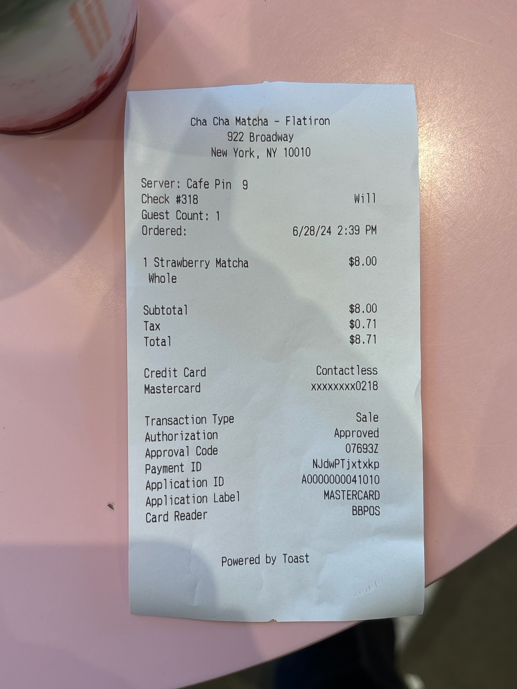
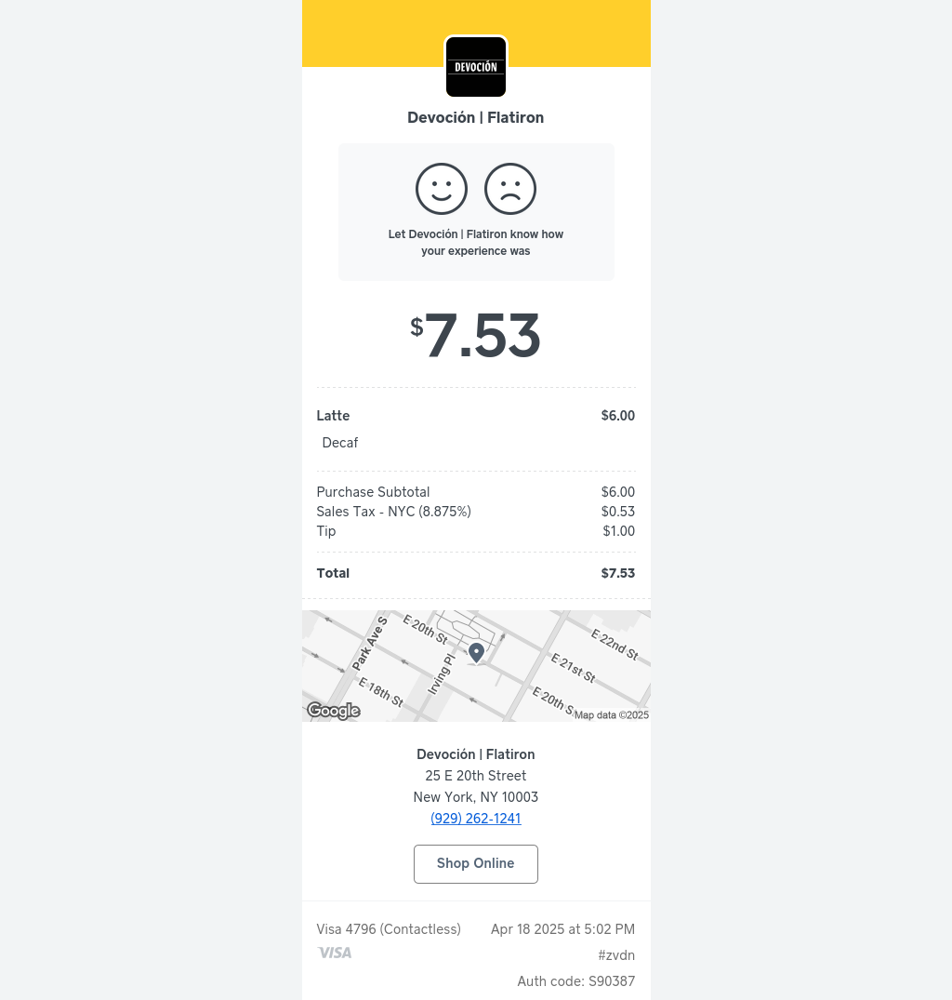
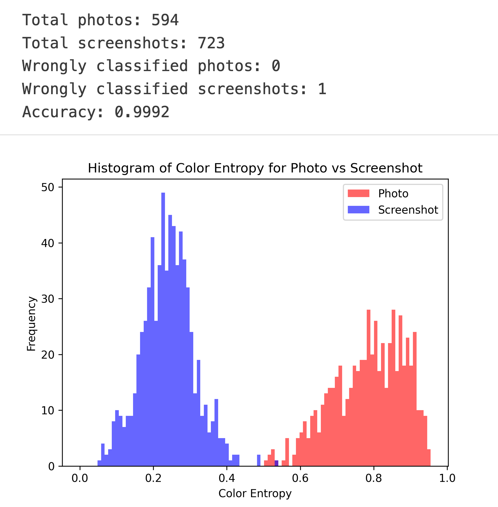

At Ramp, our customers upload two types of receipt images.
Photos:

And screenshots:

I was bestowed with the privilege of coming up with an algorithm that distinguishes between the two types.
However, I had one major limitation. I could not use any libraries other than Pillow. No OpenCV or Tesseract or classification models, just straight rawdogging it.
After a bit of tinkering, I came up with a solution that uses color entropy:
import math
from PIL import Image
from typing import Literal
def is_image_photo_or_screenshot(
img_path: str
) -> Literal["photo", "screenshot"]:
with Image.open(img_path) as img:
if img.mode != "RGB":
img = img.convert("RGB")
img.thumbnail(
(100, 100),
resample=Image.Resampling.NEAREST,
)
total_pixels = img.width * img.height
colors = img.getcolors(maxcolors=total_pixels) or []
entropy = 0.0
for count, _ in colors:
p = count / total_pixels
entropy -= p * math.log(p, 2)
# Normalize to 0.0-1.0 range
normalized_entropy = entropy / math.log(total_pixels, 2)
if normalized_entropy > 0.5:
return "photo"
return "screenshot"
The intuition behind this algorithm is simple. A photo has a large amount of unique colors. Even the blank area of a receipt in a photo will have dozens of slightly different whites. The opposite is true of a screenshot -- most of the pixels neatly belong to a handful of colors. This algorithm just measures the distribution of colors.
I ran a test on a small dataset of receipts I prepared:

Looks pretty accurate! It's also quite speedy, due to the trick of downsizing the image to 100x100 pixels.
I quickly shipped this algorithm, and it now runs on the hundreds of millions of receipts Ramp processes a year.
If this sounded interesting to you, Ramp is hiring!